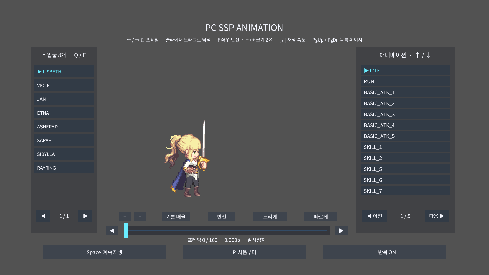
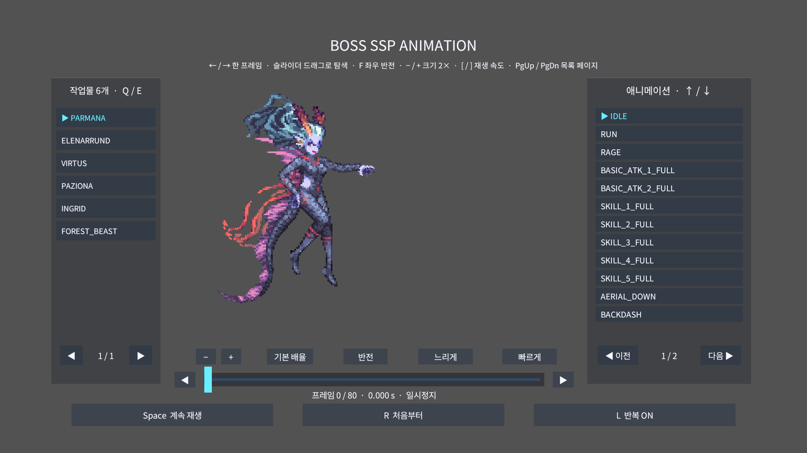
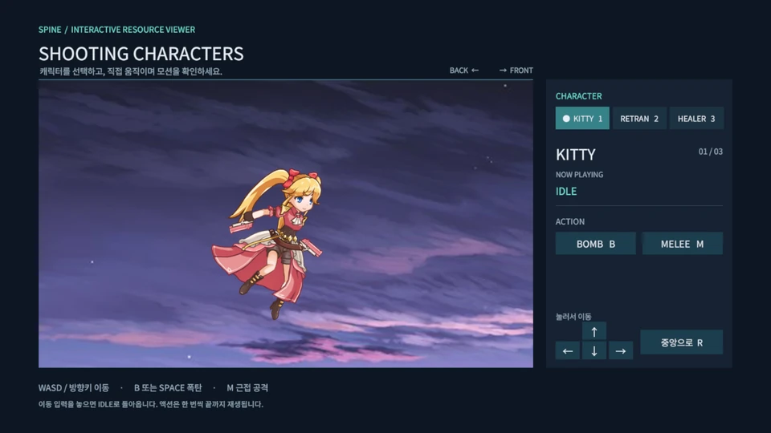
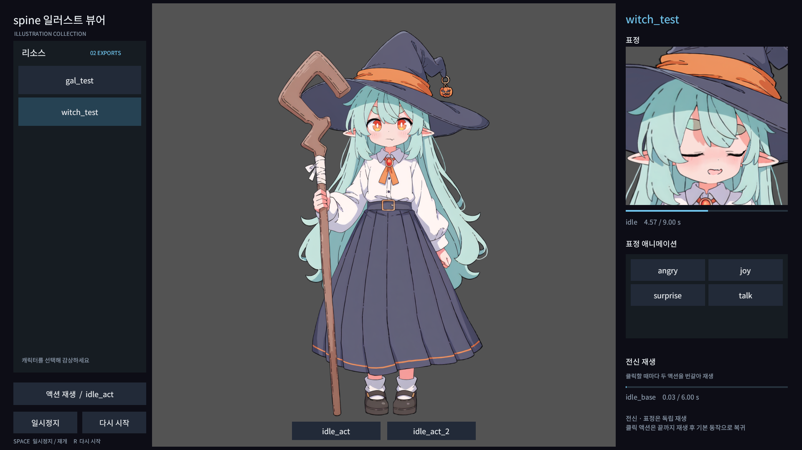
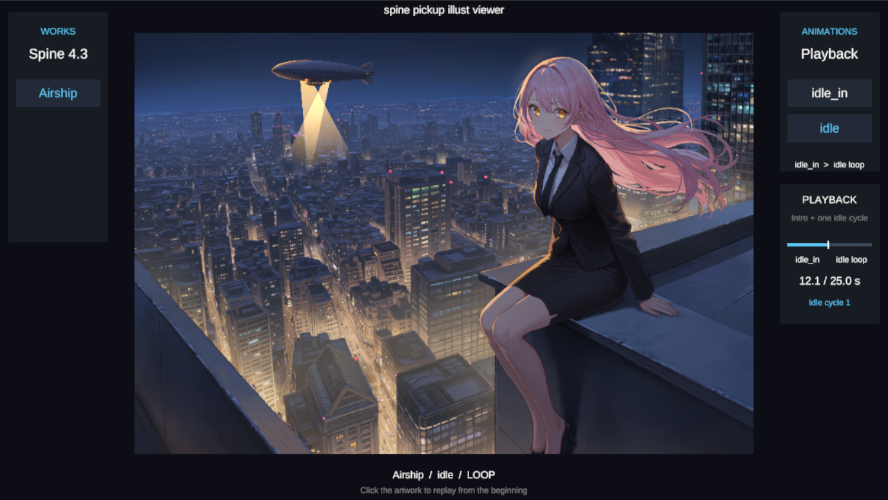

01 / PC SSP
PC SSP ANIMATION
플레이어 캐릭터 8종의 인게임 픽셀 애니메이션.

재생이 안 되나요?
처음에는 작업물을 불러오는 시간이 필요합니다. 새 창에서 보기
THE COLLECTION
원하는 작업물의 재생을 눌러 주세요. 한 번에 하나씩 감상할 수 있습니다.
전체화면으로 크게 감상해 보세요.
플레이어 캐릭터 8종의 인게임 픽셀 애니메이션.

처음에는 작업물을 불러오는 시간이 필요합니다. 새 창에서 보기
보스 캐릭터 7종의 인게임 픽셀 애니메이션.

처음에는 작업물을 불러오는 시간이 필요합니다. 새 창에서 보기
세 캐릭터를 직접 움직이며 전진·후진과 폭탄·근접 공격 동작을 확인할 수 있습니다.
캐릭터가 제공하는 스킨도 선택해 볼 수 있습니다.

처음에는 작업물을 불러오는 시간이 필요합니다. 새 창에서 보기
캐릭터의 전신 동작과 표정 애니메이션.
전신 클릭으로 두 동작을 번갈아 재생하거나 하단 버튼으로 골라 감상할 수 있습니다.

처음에는 작업물을 불러오는 시간이 필요합니다. 새 창에서 보기
시작 연출 이후 이어지는 일러스트 애니메이션.
그림을 클릭하면 처음부터 다시 감상할 수 있습니다.

처음에는 작업물을 불러오는 시간이 필요합니다. 새 창에서 보기
TOOLS OF THE TRADE
Esoteric Software Spine 4.2/OPTPiX SpriteStudio Pro
CONTACT